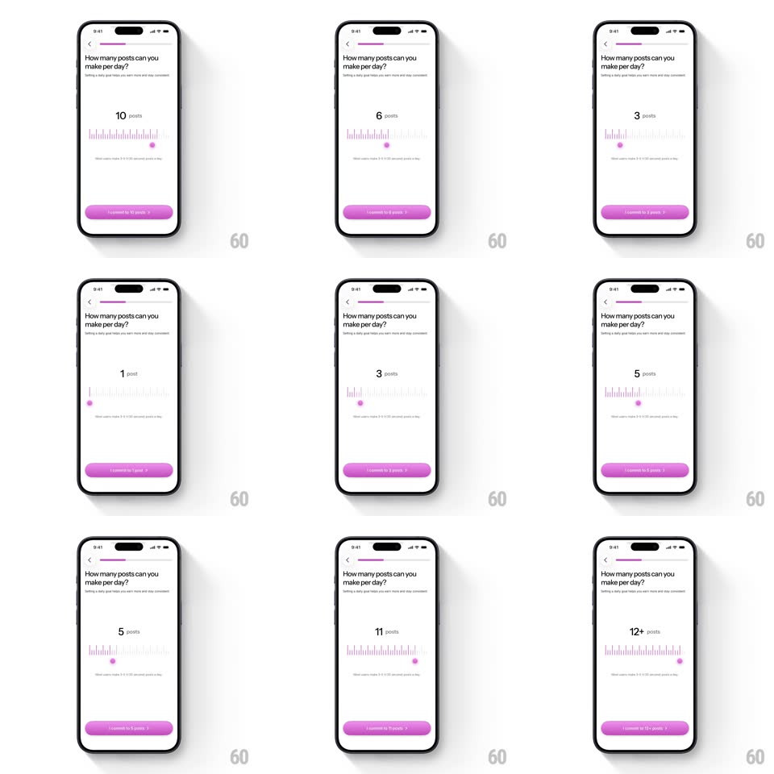

Media
Frame-by-frame

Rebuild this interaction 1:1: Methods' commitment slider - drag the handle along a ruler of tick marks and the posts-per-day goal, its pluralization, and the Continue button label all update live.

Rebuild this interaction 1:1: Methods' commitment slider - drag the handle along a ruler of tick marks and the posts-per-day goal, its pluralization, and the Continue button label all update live.
## Integration
Integration: stack-agnostic spec - springs given as stiffness/damping, timed motions as duration + curve; map every value to your framework and animation library of choice.
## Scene
A light onboarding screen: back chevron, slim progress bar, the question "How many posts can you make per day?" with "Setting a daily goal helps you earn more and stay consistent" beneath, a large centered goal value ("1 post" ... "12+ posts"), a ruler-style slider of thin vertical ticks with a pink dot handle, and a pink-purple Continue button.
## Motion spec
Pattern: ruler-tick slider with live pluralized goal text and button label.
- Ticks sit in two heights (long major ticks every 5, short minors between); ticks at or left of the handle are pink, the rest gray - the boundary tracks the drag 1:1.
- The goal value updates live with no debounce: integer steps from 1 to 12, snapping to "12+" at the cap with a small scale bump (1 -> 1.06 -> 1, 200ms).
- Pluralization is exact and instant: "1 post", "2 posts", "12+ posts" - the label swaps mid-drag without layout shift (fixed-width container, centered).
- The Continue button's label follows the value: "Commit to 1 post" ... "Commit to 12+ posts", cross-fading the text (150ms) when it changes.
- On release the handle springs to the nearest tick (~380/18); a light haptic tick fires per step while dragging.
## Calibration
- The tick ruler is the control - no separate track line; ticks replace the groove.
- The value text sits well above the ruler with generous whitespace - this screen is one decision, no other controls.
## Reduced motion
Value and labels update without the scale bump; handle snaps without spring.
## Don't miss
- "12+" is a distinct cap state, not a number - treat it as its own label.
- The button label commitment ("Commit to N posts") is the whole point - a bare "Continue" loses the mechanic.